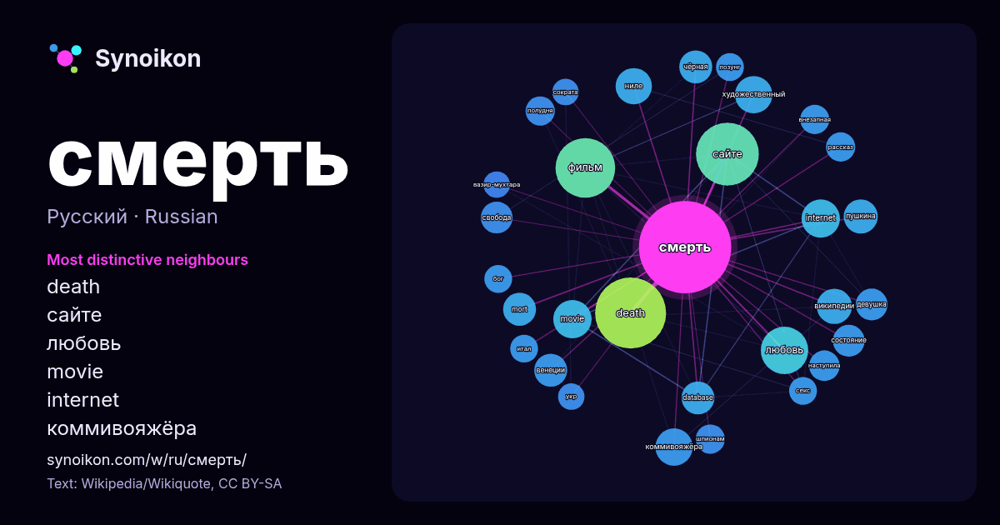

Русский · популярное слово
смерть
“death” · Слова вокруг него в 1300 вхождениях из Википедии, Wikiquote.

Самые характерные соседи
- death 63×
- сайте 39×
- любовь 22×
- movie 20×
- internet 19×
- коммивояжёра 19×
- ниле 18×
- википедии 16×
- mort 15×
- художественный 15×
- database 15×
- фильм 14×
- пушкина 14×
- венеции 13×
- чёрная 13×
- наступила 13×
- свобода 12×
- внезапная 12×
- шпионам 12×
- полудня 12×
× = во сколько раз чаще, чем в обычном тексте Википедии.
Самые частые соседи
- death 65
- сайте 51
- фильм 46
- жизни 34
- любовь 29
- название 23
- internet 19
- movie 19
- человека 19
- коммивояжёра 18
- художественный 18
- ниле 17
- википедии 16
- пушкина 15
- database 14
- mort 14
- венеции 14
- чёрная 14
- девушка 13
- роман 13
В контексте
- ожидает свою смерть, с философской точки зрения смерть приобретает значение завершающего момента жизни. Неизбежность и окончательность смерти, подчас неожиданность Wikipedia snippets · Смерть
- «внезапная смерть». В русских летописях бубонную форму заболевания называют «мором железою», а лёгочную — «мором каркотою». Выражение «чёрная смерть» (лат Wikipedia snippets · Чёрная смерть
- основана на религии; вера в возрождение после смерти стала движущей силой их похоронной практики. Смерть считалась просто вре́менным прерыванием, а не Wikipedia snippets · Жизнь после смерти
- он, сделав над собою усилие, проснулся. „Да, это была смерть. Я умер — я проснулся. Да, смерть — пробуждение!“ — вдруг просветлело в его душе. Владимир Набоков Wikipedia snippets · Смерть Ивана Ильича
- мероприятий клиническая смерть при нормальной температуре тела длится не более нескольких минут, после чего наступает биологическая смерть (необратимое состояние) Wikipedia snippets · Клиническая смерть
- «Любо́вь. Смерть. Ро́боты», «Любовь, смерть и роботы» (англ. Love, Death & Robots, стилизовано как LOVE DEATH + ROBOTS и представлено в форме эмодзи как Wikipedia snippets · Любовь. Смерть. Роботы
- находился при смерти. Бригада врачей боролась за жизнь Сталина в течение нескольких дней, прежде чем была официально зафиксирована его смерть. Обстоятельства Wikipedia snippets · Смерть Сталина
- Также истории смерти Марата посвящено множество гравюр и рисунков разных художников. К картине «Смерть Марата» Давид написал парную: «Смерть Лепелетье де Wikipedia snippets · Смерть Марата
Другие слова
- бог
- власть
- вода
- деньги
- жизнь
- здоровье
- золото
- искусство
- истина
- история
- климат
- кошка
- мост
- наука
- пища
- поезд
- природа
- работа
- семья
- сердце
- собака
- язык
Предварительно рассчитано 2026-10-09 с настройками по умолчанию (±5 слов, средний корпус). Интерактивная карта может обновить данные в реальном времени.
Интерфейс переведён машинно; исправления приветствуются.